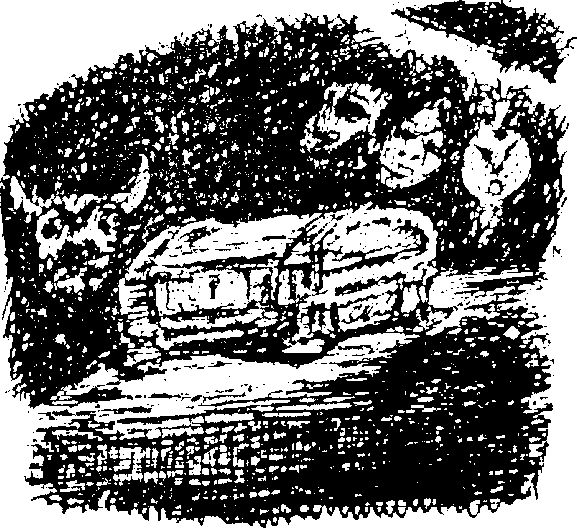
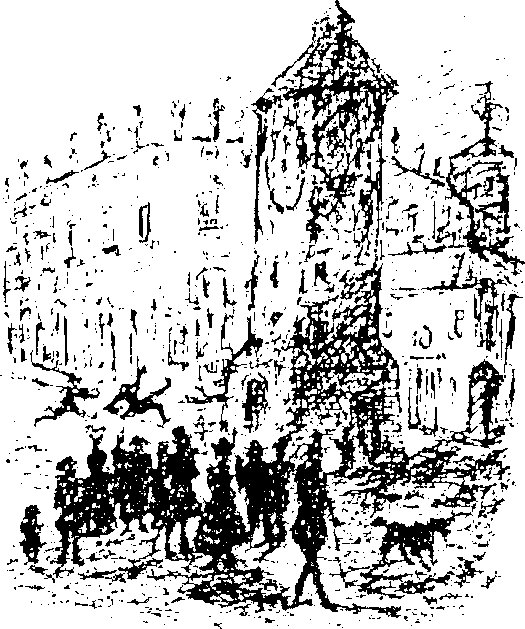
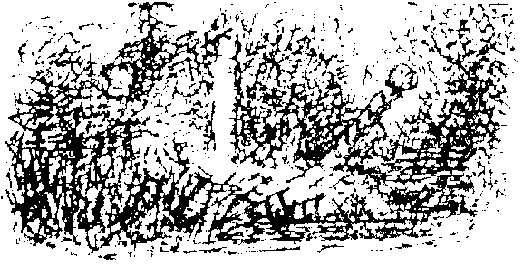
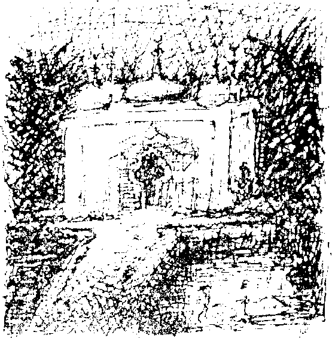
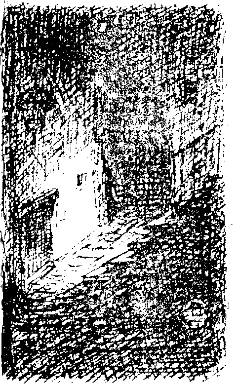

ğildir. İşte bunlar, sevgili bayım, belli başlı önermelerdir. Bütün teorimi dinlemiş oldunuz.”
“Ah evet, o zaman sen bir düşünürsün,” diye onaylardım söylediklerini.
Her gün sabahtan akşama kadar tüm zamanını böyle seçkin düşünce alanlarında geçiriyordu, eğer Giovanni Battista olmasaydı berber dükkanının işi çok zordu. O sadece bir maymundu, ama ne maymun! Şaşılacak derecede yetenekli ve hırslı bir hayvancıktı. Öyle bir yardımcınız varsa kendinizi mutlulukla ahlak teoremleri arasında kaybedebilirdiniz. Giovanni dükkânda çalışmaya başladığında en alt basamaktaydı. Bir gün bir müşterinin yüzünü kendisine gösterilmeden sabunlayınca yeteneği ortaya çıktı. Berber onun öğrenmeye çok hevesli olduğunu anladı ve yeteneklerini kullanmaya başladı. Usturayı hızlı ve hatasız kullanıyordu, kısa sürede bütün bölgede ünlendi. Çarşamba ve Cumartesi günleri özel müşterilerin evlerine bile servis yapıyordu. Onu genellikle elinde çantası, ciddi, sağduyulu ayak sürüyüşüyle Uzun Cadde’yi arşınlarken görürdük. Dünyadaki her insandan daha dürüst ve güvenilir olan bu maymun, berber dükkânının temel direğiydi. Sahibini üzen tek bir özelliği vardı, felsefeye hiç ilgisi yoktu.
“Sen bir Stoacısın!” diye haykırırdı berber uzun bir nutuk attıktan sonra arkasından. Gizliden gizliye hâlâ maymununu daha yüce bilgilerle donatmak istiyordu.
İtiraf etmeliyim ki ne zaman Rüya Ülkesi’ndeki ilk senemi düşünsem içimi hüzün kaplar. İşlerim genelde iyi gidiyordu, o sene hayatımdaki en iyi dönemleri geçirdim. Yeni deneyimlerin teşvikiyle çalışmalarım çok iyi gitmeye başladı. Akşamüstü saat beşte kafede arkadaşlarımla buluşuyordum. Pencereden, dışarıda olup biten her şeyi görebiliyorduk. Aslında dışarıda pek bir şey olmuyordu, Pearl’de insanlar evlerinde oturmayı tercih ederlerdi, şehir merkezi şaşılacak kadar boştu. Fakat sokak yaşantısının kısırlığına rağmen gördüklerimiz bize yetiyordu, tanıdık, sevdiğimiz bir rutini izliyorduk. Giderek ülkenin bir parçası olmaya başlamıştım. Tutunabileceğim, karmaşanın ortasında destek alabileceğim şeyler buldum.
Binalar hayatımda önemli bir yer tutuyordu. Çoğu kez insanların binalar için orada olduklarını, durumun tam tersi olduğunu hissettim. Güçlü, gerçek bireyler binalardı. Dilsiz fakat mantıklı bir biçimde oldukları yerde dikiliyorlardı. Hepsinin anlatacak bir hikâyesi vardı, sadece sabırlı olup bu hikâyeleri eski binalardan parça parça çıkarmanız gerekiyordu. Bu evlerin hepsinin ayrı ayrı ruh halleri vardı. Bazıları birbirlerinden nefret ediyor, günlerini birbirlerine sessiz sövgüler savurarak geçiriyorlardı. Aralarında tıpkı yan taraftaki mandıra gibi huysuz dırdırcılar vardı, bir çoğu da küstah ve gevezeydi. Gittiğim kafe buna iyi bir örnekti. Yaşadığımız ev aksi ve yaşlı bir teyzeydi; pencereleri kısık gözler gibi kinle bakıyor, hiçbir dedikoduyu kaçırmıyordu. Max Blumenstich’in dükkânı çok kötü kalpliydi, mandıranın yanındaki nalbant kaba ve iyi huyluydu. Nehrin üzerindeki bekçi kulübesi kaygısız ve yumu-şak başlıydı. En sevdiğim bina nehir kıyısındaydı, köşedeki değir-menden söz ediyorum. Arduvaz kaplı, yosun tutmuş çatısı kasket gibi görünüyordu, beyaz badanalı yüzü neşeliydi. Sokak cephesin-de duvardan çıkan dev kiriş, kaliteli bir puroyu andırıyordu. Yine de belirtmeden geçemeyeceğim, çatıdaki pencerelerinin çevresinde hafif kurnaz, dalevereci bir parıltı vardı. İki kardeşe aitti. Yoksa iki kardeş tıpkı iki çocuklu bir anne gibi ona mı aitti?
Anlatabileceğim çok şey var, keşke okuyucularımın bu karmaşık olayları, benim istediğim gibi görmelerini sağlayabilseydim. Bir süre sonra, aynı sokaktaki evlerin aile gibi olduklarını hissetmeye başladım. Aralarında kavga ediyorlar ama dış dünyaya karşı birlik oluyorlardı. Pearl’ün boş sokaklarındayken, dış dünyanın gürültülü şehirlerinde asla olmayacak biçimde yeni fikirler üretiyordum. Koku duyum mucizevi bir biçimde gelişti, bu sayede yöresel kültürle çok daha çabuk kaynaştım. Pearl’e geldikten altı ay kadar sonra oldu bu. Ondan sonra bir şeyi sevip sevmeyeceğime hep burnum karar verdi. Saatler boyunca burnumu çekip her şeyi koklayarak eski köşelerde dolaşırdım. Yeni ve sınırsız bir araştırma alanı açılmıştı önümde. Kullanılmış eşyaların her biri küçük sırlar taşıyordu. Karım sık sık halime gülerdi. Bir kitabı ya da örneğin bir müzik kutusunu kokladığımı görmek onu eğlendiriyordu. Neredeyse bir köpek gibiydim. Tam olarak açıklayamam; duyularla ilgili böyle ince bir şeyi açıklamak için kelimeler yetersiz kalır.

Öncelikle, Rüya Ülkesi’nde her şeyi kaplayan, oldukça olağandışı olmasına rağmen tarifi zor bir koku vardı, her şeyde hissediliyordu. Bazen çok kuvvetliydi, bazen zar zor hissediliyordu. Çok yoğun olduğu zaman un ve kuru morina balığı karışımını hatırlatan bir kokuydu. Nereden geldiğini hiç bulamadım. Eşyaların kendi kokuları ise çok daha özeldi. Bu kokuları incelerken sık sık iğrenme nöbetleri geçiriyordum. Bana göre yanlış kokan insanlara çok kolay güceniyordum. Fakat ayrı cinslerden olmalarına rağmen, tuhaf bir kapris uğruna bir araya getirildikleri için, bütün canlılar ve görünürde cansız maddeler, tanımlanamaz bir birliktelik havası yayıyorlardı.
Rüya Ülkesi'nde karşınıza çıkan her şey sıkıcı ve tekdüzeydi Bunun ne kadar ileri düzeyde olduğunu bir gün traş olurken anladım. Giovanni her zamanki narinliğiyle görevini yerine getiriyordu, fakat usturasının ve bakır kabının durumu pek de iç açıcı değildi, kararmış görünüyorlardı.
“Bu da ne?” diye sordum o sırada bana Leibnitz’in Monadology’sinin oldukça zor bir bölümünü okumakla meşgul olan berbere. “Çırağın bu eşyalara daha iyi bakamaz mı?”
“Efendim?” büyük filozof uçurumdan aşağı yuvarlanan birinin bakışıyla yüzümü inceledi.
“Bu kap pırıldıyor olmalıydı, usturayı da cilalamalısınız.” “Haklısınız ama nasıl yapayım? Her şey böyle, ben de yenilik getirmek istemiyorum.”
Açığını yakalamak için aynaları işaret ederek şöyle dedim; “Peki ya aynalar, son derece temiz ve pırıl pırıl görünüyorlar.” Buna karşılık ortaya koyacak bir felsefesi yoktu. Onu köşeye sıkıştırmıştım. “Ha, aynalar mı,” dedi. Dalgın ve kararsız bir ifadeyle, sanki kelimeleri söylemekte zorlanıyormuşçasına; “Aynalar hiçbir şey değil ki!” dedi. Aynalar hakkında konuşmayı utanç verici bulmuş gibi görünüyordu.
“Hakaret etmek istememiştim,” deyip arkadaş canlısı bir selam vererek dükkândan çıktım.
Ne olursa olsun, bu paslanmış eski eşyalar arasında iyi bir yaşantımız vardı. Bu noktada, yazıma aşağıdaki mektubu eklemekten çekinmeyeceğim. O sıralardaki ruh halimi çok iyi açıklıyor. Mektupta ayrıca dinle alakalı bir geleneğin tanımlaması da yer alıyor, dinle ilgili açıklamaları daha sonra yapacağım. Büyük Saat Kulesi Büyüsü geleneğinden söz ediyorum. Bu mektubu Rüya Ülkesi yıkıldıktan sonra elimde kalan paçavraların arasındaki bir defterin içinde buldum. Daha sonra yazacağım kutsal eşyaların listesi de aynı defterin arasından çıktı, yolumu bulabilmek için ilk günlerde çizdiğim uyduruk bir Pearl haritası taslağı ve pek çok binanın ayrıntılarının yer aldığı sayfalar hariç bütün defter okunaksız el yazısıyla doluydu.
Mektubu Pearl’e gelişimizin üçüncü ayında yazmıştım. Dış dünyayla bağlantı kurmak için ilk girişimimdi. İki sene sonra bana geri döndü, zarfın üzeri pullar ve notlarla kaplanmıştı. Rüya Ülkesi hakkında insanlara kanıt olarak gösterebileceğim tek şey bu defter ve içinden çıkan mektup.
Sevgili Fritz,
İnanamayacaksın ama ben Rüya Ülkesi’ndeyim! Sana tek söyleyeceğim şu; bu mektubu okur okumaz bavullarını topla ve sen de gel. Pearl koleksiyoncular için tam bir cennet, bu şehir adeta büyük bir müze gibi. Pek çok işe yaramaz çöp de var elbette, fakat aynı zamanda muhteşem eserler de var. Bugün oyma Gotik bir sandık, bir çift gümüş şamdan (16. yüzyıldan kalma) ve senin her zaman umutsuzca aradığın büyüleyici rönesans bronz heykellerinden birini (Cellini’nin boğaya binen çocuğu) gördüm. Geçen hafta dükkanların hepsi porselen cenneti gibiydi. Sağlığına dokunur endişesiyle buradaki fiyatların ne kadar makul olduğundan söz etmeyeceğim. Bu tür şeylerden anlayan biri, her gittiği yerde küçük bir hazineyle karşılaşacaktır. Burada eski şeylerden başka hiçbir şey yok. Eski güzel günlerdeki, büyükbabalarımız gibi yaşıyoruz ve bilimsel ilerleme umurumuzda değil. Evet, eski dostum, sapına kadar muhafazakarız, zanaatçılarımız da yama yapmakta ve onarmakta çok ustalar. Her beş binadan birinde bir antikacı dükkânı var, geçimimizi eski püskü şeylerden kazanıyoruz. Mimari ölçüsüzlük de had safhada; buradaki Saray en az yirmi değişik mimari tarzın karışımından oluşuyor. Öyle tuhaf şeyler buluyorum ki! Görsen inanmazdın. Sana son rastladığım saçmalığı anlatınca keyfimin neden bu kadar iyi olduğunu anlayacaksın. Büyük Saat Kulesi Büyüsü’nden söz ediyorum, burada öyle diyorlar. Gözünün önüne getirmeye çalış; ana meydanımızda dev, gri bir kule var, bir tür diz çökmüş kule sanki, üzerinde eski bir saat var. Saatin yüzü kulenin üst kısmının üçte birini kaplıyor ve geceleri aydınlatılıyor. Standart zamanımızı bu saate göre ayarlıyoruz, şehirdeki ve ülkedeki diğer tüm saatler bu saate göre ayarlanıyor. Bunda şaşılacak bir şey yok elbette, fakat bu saatin buradaki insanlar için çok daha ilginç ve tuhaf bir önemi var. Bütün ülke halkı üzerinde inanılması çok güç, gizemli bir etkisi var. Bazen, bu saat kulesinin etrafına kadın ve erkeklerden oluşan büyük bir kalabalık toplanıyor. Bir yabancı görse bu toplananların tuhaf hallerine şaşkınlıkla bakakalırdı. İnsanlar sinirli sinirli ayaklarını yere vuruyor ve yukarıdaki saatin uzun, paslı kollarına bakıyorlar. Onlara neler olduğunu sorduğunda kaçamak, karışık cevaplar veriyorlar. Daha yakından bakarsan, saat kulesinin dibinde iki tane küçük kapı görürsün. Herkes bu kapılara doğru ilerlemeye çalışıyor. Eğer çok büyük bir kalabalık varsa sıraya giriyorlar, kadınlar telaşlı, erkekler öfkeli bir biçimde insanların kaynak yapmasına engel oluyorlar. Saatin kolları ilerledikçe gerilim de artıyor. İnsanlar birer birer kapılardan geçip kayboluyorlar, birer ya da ikişer dakika içeride kalıyorlar. Dışarı çıktıkları zaman yüzlerinde gözle görülür bir memnuniyet hali, neredeyse mutluluk ifadesi oluyor. Bu durumda meraklanmam kaçınılmazdı. Kafede tanıştığım ahbaplarımdan birine saat kulesiyle ilgili sorular sordum fakat üstü kapalı cevaplar aldım. Bu tarz şeyler hakkında konuşmanın yersiz olduğunu söyledi ve aptalca davrandı. “Eğer bilmeniz şartsa,” diye ekledi, “adı Büyük Saat Kulesi Büyüsü' dür. Aklınızda bulunsun!” Kızgınlığı beni daha da meraklandırmıştı. Söyledikleri benim tahminlerimi çürütüyordu, ben içeride bir camera obscura ya da bir balmumu heykel müzesi olduğunu sanmıştım. En sonunda ben de içeri girmeye karar verdim ve sonuçta büyük bir hayal kırıklığına uğrayacaksın. İçeride duvarları, kuytu ve karanlık köşeleri gizemli çizimlerle, büyük ihtimale sembollerle dolu küçük bir oda vardı. Duvarın arkasındaki dev sarkacın sağa sola sallandığını duyuyorsun. Tik.. tak... tik... tak... Taş duvardan aşağı hiç durmadan sular sızıyor. Arkamdan gelen adama bakarak onun yaptıklarının aynısını yaptım, duvara bakarak yüksek sesle; “işte burada huzurunuzdayım," dedim. Sonra dışarı çıktık. Kafam çok karışmıştı. Kadınların kendi giriş kapıları vardı, oradan kendi taraflarına giriyorlar, kapının üzerinde dünyanın her tarafındaki gibi girişin kadınlara ait olduğunu gösteren bir işaret vardı. Fakat en şaşırtıcı olan ne biliyor musun? Bu deneyimi bir kere yaşadıktan sonra aynı güçlü isteği ben de hissetmeye başladım. İlk başlarda ne zaman kulenin yanından geçsem içimde hafif bir istek uyanıyordu, fakat günler geçtikçe tedirginliğim giderek arttı, en sonunda kelimenin tam anlamıyla kule beni şiddetle çekmeye başladı. En sonunda bu isteğe teslim oldum, savaşmanın anlamı yoktu, şimdi iyiyim. Şehrin her yanında aynı kulenin daha küçük modelleri de var. Söylendiğine göre şehir dışında yaşayanlar da evlerine, bizim köylülerin evlerinin bir köşesine çarmıh koymaları gibi saat kulesinin küçük kopyalarını koyuyorlarmış. Ben her gün aynı saatte kendi kulemi ziyaret ediyorum. İstersen dalga geç fakat; "Efendim, işte burada karşınızdayım. "
Burada resim sanatı adına yapacak pek bir şey yok. Sanat eserlerine en çok günlük kullanım açısından değer veriliyor. Etrafta birkaç tane yaşlı ressam var, gördüğüm kadarıyla eski Hollandalı ustaların çalışmalarının kopyalarına benzeyen karanlık, ince boyalarla boyanmış sonbahar manzaraları falan yapıyorlar. Zenginlerin evlerinde arada bir çok değerli eserlere de rastlanabiliyor, mesela Ruysdael’ler, Breughel’ler, Altdorfer’ler ve eski dönem ressamlarının eserleri. Rüya Ülkesi Bankası’nın müdürü, ülkenin Karun’u olan Alfred Blumenstich’in değerli eserlerden oluşan bir galerisi var, bu resimler arasında bir Rembrandt ve sizin dünyanızda kimsenin varlığından haberdar olmadığı gerçek bir Grünewald da bulunuyor. Tablonun adı “Tanrı’nın Kuzusu’nu yiyen Yedi Ölümcül Günah.”

Burada canlı renkler yok, burası daha çok bir çizgiler ve tonlar ülkesi. Resimli bir gazete olan Rüya Aynası 'nda iyi bir işim var; ayda 400 kron alıyor ve ne istersem onu yapıyorum. Gazetenin, Nicholas Castringius adında henüz tanışmadığım bir çizeri daha var. Eğer gelirsen sana da gazetede bir iş bulabiliriz.
Şimdilik hepsi bu kadar, umarım birbirimizi yeniden görürüz.
Eski dostun, sanatçı ve şimdi bir Rüya Ülkesi vatandaşı,
Not: Eğer gelirsen burada şehrin kıyısında, tıpkı bir kır evine benzeyen sessiz, sakin bir evde yaşayabilirsin.
Mektuptan anlayacağınız gibi o zamanlar keyfim hâlâ yerindeydi. Yavaş yavaş hissetmeye başladığım sorunları o zamanlar fark edebildiğim kadarıyla bu bölümün sonunda anlatacağım. Fakat öncelikle Rüya Ülkesi’nde dini, daha doğrusu benim din sandığım şeyi biraz daha açıklamaya çalışacağım.
VII
Rüya Ülkesi’nde din, ilginç ve karmaşık bir konuydu. Pek çok gizemi çözmeye çok yakın olduğumu hissetmeme rağmen her şeyi açıklığa kavuşturamadım. Araştırmalarımdan sonuç alamadıysam, bu benim suçum değil. Yaptığım araştırmalara engel olan düşman bir güç vardı, o yüzden çok az bilgi edinebildim.
Rüya Ülkesi’nde eski dünyanın bütün büyük dinleri temsil ediliyordu, bazıları daha yaygındı, bazıları ise yok denecek kadar az biliniyordu. Aslında bu, sadece görünürde böyleydi, bir kandırmacaydı. Nüfusun eğitimli kesimi bu durumun farkındaydı. Onlar özgür düşünceli ve zeki insanlardı, katı bir hiyerarşik sisteme kolayca boyun eğecek insanlar değillerdi. Aynca aralarında gerçekten çok zeki insanlar da vardı. Yine de genel bir inanış hüküm sürüyordu; eşit, hatta yasal bir biçimde adalet dağıtan bir takdir-i ilahiye kaderci bir yaklaşımla inanıyorlardı. Bunun ötesinde pek çok karanlık ve anlaşılmaz fikir de akıllarda yer etmişti. Bu inanışlarla kesinlikle dalga geçilmemeliydi, bunu kısa bir süre sonra öğrenecektim.
Rüya Ülkesi’ndeki ilk aylarımızda kafede genç ve hoş bir adamla tanıştım, adı Baron Hector von Brendel’di. Nazik bir adamdı, iyi bir eğitim görmüştü, ayakları yere sağlam basıyordu, biraz gergin ve bezgin, fakat kesinlikle aptal değildi. Her zaman hafif melankolik bir havası vardı, beni ona ilk çeken de bu oldu. Tanıştıktan sonra birbirimizi her gün görmeye başladık.
Kafe sakinleriyle birlikte toplandığımız masada sadece ikimizin olduğu bir gün ona, “Burada üç senedir yaşıyorsun, Brendel,” dedim. “Bak, bu ülkede tıpkı Masonlar locası gibi gizli bir dini tarikat olduğuna inanıyorum. Senin bu konuda bilgin var mı? Bana, mesela törenler ve geleneklerle ilgili anlatabileceğin bir şeyler var mı?”
Bana yan yan baktı, boğazını temizledi ve sakin bir sesle, “Neler fark ettin?” diye sordu.
“Ah, çok da özel bir şey fark etmedim, kadercilik kavramı oldukça eskidir. Sadece genel görünüş, eski moda yaşam tarzına inatla sahip çıkma, ilerici görüşleri dışlama ve bunun gibi birkaç şey daha.” Ona berberi ve berberin bakır çanağını anlattım.

Ciddi bir ifadeyle beni dinledi, yavaş yavaş bir sigara sardı ve hazin bir gülümseyişle, “Dürüst olmam gerekirse, dostum, gerçekten de öyle bir şey var. Fakat senin için en iyisi bildiklerinden daha fazlasını öğrenmemektir,” dedi.
“Demek ki haklıymışım!” Hayal kırıklığına uğramıştım. “Sen hiçbir şey bilmiyor musun? Eğer anlatmaktan çekiniyorsan sır saklama konusunda bana güvenebilirsin.”
Brendel birkaç dakika düşündü ve alçak sesle konuşmaya başladı. “Burada bazı belirli şeylere tapılıyor. Sana kutsal eşyalardan bazılarını söylersem işine yarar mı?”
“Ah, lütfen anlat,” diye yalvardım, meraktan ölüyordum. “Tamam, şey, yumurtalar, cevizler, ekmek, peynir, bal, süt, şarap ve sirke özellikle çok saygı görüyor.”
“Hah!” dedim neşeyle. “Midenin kutsallığına inanan bir sağlık mezhebi.” Dalga geçmeden duramamıştım. “Peki ya çay, kahve ve şeker?”
Ben bunu söyleyince Brendel sırtını döndü ve hesabını ödedi. Rüzgâr aniden kapıyı açtı, içeriye sıcak, nemli, toprak kokulu hava ve o rahatsız edici Rüya kokusu doldu. Brendel bana kısa bir veda edip çıktı gitti. Yüksek, buğulu camlardan dışarı baktım, gidişini seyrettim. Dışarıda hava kararmıştı.
Onunla dalga geçmemem gerekirdi. Bir fırsatı kaçırmıştım. Bir dahaki sefere çok daha dikkatli olacaktım.
Bu din, sadece yemek ve içmekle ilgili olamazdı. Kısa bir süre sonra saçın, boynuzların, çam kozalaklarının, mantarın ve samanın da kutsal olduğunu fark ettim. Hatta at ve inek tezekleri bile bir ölçüde önemli görünüyordu. İç organlar arasında karaciğer ve kalp kutsaldı, hayvanlar arasında da balıklar. Tabakalanmış deri de gizemli bir öneme sahipti. Demir, çelik ve pek çok metal alaşımı tam tersi bir öneme' sahipti. Bu metaller tehlike sembolleriydi. Bu ayrıntıları köylülerden ve avcılardan öğrendim, bunları öğrenmek için kırlarda uzun yürüyüşler yapmam gerekiyordu. Bu ağzı sıkı insanlardan öğrendiğim her şeyi aylar ve yıllar boyunca bir deftere not ettim, fakat lafı uzatmamak için burada uzun bir liste yapmayacağım. Öğrendiğim son bir gerçek daha ilginizi çekebilir. Ormanlarda ve bataklıkların yanında alacakaranlıktan sonra hiçbir yolcunun gitmeye cesaret edemediği ıssız yerler vardı. Ürkütücü yerler oldukları herkes tarafından söyleniyordu, insanlar işleri o taraflara düştüğü zaman çok korkuyorlardı.

Eğer göl kıyısındaki tapınağı kendi gözlerimle görmüş olsaydım, belki üstü kapalı laflar etmek yerine daha ayrıntılı bilgi verebilirdim. Anlatılanlara göre; bu tapınak büyülü, mucizevi bir yerdi. Pearl’den bir günlük mesafede, Rüya Gölü’nün yanıbaşındaki insan yapımı çağlayanlar ve sessiz bir parkın ortasındaydı. Söylentilere göre; Rüya Ülkesi’nin en büyük hazineleri bu tapınakta saklanıyordu. En iyi malzemelerden yapılmıştı, o kadar mükemmel bir mimarisi vardı ki ziyaretçiler binanın havada asılı durduğunu sanıyorlardı. Salonlarının en büyüğü Patera’nın renkleriyle bezenmişti, yani kahverengi, gri ve yeşil. Gizemli yeraltı mezarlarında sembolik heykeller vardı. Maalesef ziyaretçilere senede sadece bir gün açıktı ve davetiye almak için çok iyi bağlantılara sahip olmak gerekiyordu. Başlangıçta Patera ’yla kişisel bağlantımın tapınağa girmeme yardımcı olacağını sanıyordum, fakat huzura kabul edilmem sürekli erteleniyordu, sonra da Olaylar başladı.
Yorulmak bilmeden gerçek Rüya dinini keşfetmeye çalışıyordum, fakat hiçbir şeyi ortaya çıkaramadığımla kaldım. Araştırma yapayım derken sürekli birilerini gücendiriyordum.
Bir keresinde banker Blumenstich’in bir davetine katılmıştım. Çok kalabalık, neşeli bir davetti. Ev sahibimiz kısa süre önce kurduğu yüzme havuzu için bir ödül almıştı, bu büyük onur layığıyla kutlanıyordu.
Yemek bitmişti. Herkes kahve ve likörünü almış sigara içerek oturuyordu. “Pearl’ün en büyük adamları bu gece burada. Eğer bu gece bir şeyler öğrenmezsem bir daha asla öğrenemem," diyerek cesaretimi topladım ve konuşmaya başladım. Onlara Rüya Ülkesi’nin gerçek dinini bulma çalışmalarımı ve boşa giden emeklerimi anlattım. Sanki içten gelen bir gücün etkisindeymiş gibi çok güzel, akıcı konuşuyordum. En sonunda karşımdaki dahileri, bilgiye olan açlığım konusunda ikna ettiğime karar vererek beni aydınlatmalarını istedim. Sonra da sustum. Artık konuşmaya devam edemezdim, boğazım kurumuştu. Karşımda oturan kalabalık sanki dilini yutmuş gibi şaşkın ve endişeliydi. Eski moda zarif giysiler içindeki akıllı, ciddi görünüşlü yaşlı iki beyefendi çoktan yerlerinden kalkmış yan odaya tüymeye çalışıyorlardı. Asıl umudumu onlara bağlamıştım. En sonunda ev sahibimiz siyah bıyıklarını çekiştirerek konuşmaya başladı.
“Genç adam, nehrin öbür yakasındaki Dış Yerleşim’e hiç gittiniz mi? Bence oraya gidip bir göz atmalısınız.” Sert bir sesle, son noktayı koyarcasına konuşmuştu.
Konuklar sanki bunaltıcı bir yükten kurtulmuşlardı. Nihayet birisi konuşmuştu! Sohbet her zamanki sıradan konulara döndü. Kimse benimle ilgilenmiyordu. Sadece orada bulunan gazete editörü yatıştırıcı bir sesle, “Ah siz sanatçılar!” dedi.
Fakat bu da beni rahatlatmaya yetmedi. Kısa bir süre sonra düşünceler içinde eve doğru yola koyuldum. “Bu işin aslını asla öğrenemeyeceğim!” diye haykırdım karanlığa.
Saat kulesinin yanından geçerken aklıma bir fikir geldi. Belki de her şeyin çözümü Büyük Saat Kulesi Büyüsü’ndeydi? Bu konudan da söz etmemek gerekmiyor muydu? Bu konudan behsetmek de her zaman yersizdi. Neden bu kadar utanıyorlardı? Görünüşe göre bir kere daha enfant terrible olmuştum. Peki ya kimsenin umurunda olmayan, köprünün diğer yanındaki şu küçük köy, yani Dış Yerleşim’le ilgili bütün saçmalıklar? Bahaneler, bahaneler! Yumruğumu sıkarak, bütün bu saçmalıkların altında neler yattığını öğreneceğime dair kendi kendime söz verdim.
VIII
Artık size Rüya Ülkesi’ndeki yaşantımızla ilgili bazı olumsuzlukları anlatmanın zamanı geldi, yoksa orada bütün zamanımızı keyif çatarak geçirdiğimizi sanacaksınız. Zevk dolu yaşantımızın zor yanları da vardı. Öncelikle, yaşadığımız binaya, alt katımıza yaşlı bir kız kurusu taşınmıştı, ona Prenses X diyelim. Bir sıçan kadar çirkin, aynı zamanda son derece huysuz ve geçimsizdi. Bu yaratık bize, özellikle de karıma çok sorun çıkartıyordu. Cimrinin tekiydi. Çok parası vardı fakat bir köşeye çekilmiş yaşıyordu, kimse ne kadar parası olduğunu bilmiyordu. Eminim hayattaki tek zevki sürekli kavga çıkarmaktı. Saat dokuzdan sonra evde yürüsem tavana vurmaya başlar, sessizlik isterdi.
Ne zaman merdivenden indiğimi görse azarlamaya başlardı. Kapısının önünde süt ve benzeri şeylerin servisi için her zaman bir dizi kap kacak olurdu. Bir kere, merdivenleri karanlıkta çıkmaya çalışırken toprak kaplarından birini kırdım, zaten beklediği de buymuş! Beni hemen düşman ilan etti. Hatta beni, felsefe sevgisine rağmen “hanımefendilerine" hâlâ biraz saygı duyan berbere karşı bile karalamaya çalıştı. En sonunda çok ileri gitti ve merdivenlerde karıma hakaret etti, işte o zaman ona gününü gösterdim.
“Dön de kendine bir bak! Senden ancak Pislikler Prensesi olur!" dedim. Pasaklı kadının saçları her yerden çıkıyordu. Bunun biraz faydası oldu. Soylu kanıyla çok gururlanıyordu, o günden sonra ne zaman yaklaştığımı duysa kapısından içeri kaçmaya başladı. Bir keresinde o kadar hızlı kaçtı ki yamalı terliklerinden biri kapının önünde kaldı. Terliği ayağımla itekleyince içindeki altın paralar merdivenlerden aşağı yuvarlandı, şaşırıp kalmıştım. Binadaki herkes çıkıp şikayet edene kadar “Hırsız! Katil!” diye avazı çıktığı kadar haykırdı.
Bu tür olaylar sık sık oluyordu. Hayatlarımızı cehenneme çeviriyordu. Fakat “öğrenci" hayatımızı karartmakta çok daha başarılıydı.
Bizimle aynı katta, iki odalı bir dairede oturuyordu, sürekli sarhoştu. Yüzü içkiden şiş ve ifadesizdi, iki yanağındaki düello izleri sanki üç ağzı varmış gibi görünmesine neden oluyordu. Öte yandan beyni sıradan bir insanın beyninin üçte biri kadardı. Komşumuz sürekli dışarı çıkan bir gece kuşuydu, yatmaya geldiği zaman ayakta sallanır, her zaman yanlış kapıyı denerdi. Hemen her gece onun kapıyı yumruklaması ve sövüp saymasıyla uyanırdık. Onu sayısız kere payladım fakat hiçbir şey değişmediği sürece özür dilemesinin ne anlamı vardı ki? En sonunda, biraz huzura kavuşabilmek için değiştiremediğimiz şeyleri kabullenmek zorunda kaldık.
Sonra, bir şey daha vardı. Bazı günler sanki üzerimize bir uğursuzluk çöküyordu. Birkaç örnek vereyim:
Duvar ustasının biri sabahın beşinde elinde bir kova harç ve eşya torbasıyla kapımıza dayandı, oturma odamızdaki pencerelere tuğla örmek için emir aldığı konusunda ısrar etti. Bir başka seferinde, gecenin köründe bir çingene grubunun serenadıyla uyandık, bir yanlışlık söz konusuydu elbette. Her tür iş için ziyaretçiler geliyor, bize ait olmayan eşyalar kapımıza getiriliyor, bir daha geri alınmıyordu. Bir keresinde bir paket eski kaşarın kabukları iki hafta süreyle evimizde kaldı. En sonunda bunları çöpe attım, sonra üç ordu subayı gelip buyurgan tonlarda kendilerine ait olan peyniri istediler. Kapı kapı dolaşıp dilenmek Pearl’de başlı başına bir sanattı. Fakat iyice tatsız şeyler de oluyordu. Örneğin; bir akşam alacakaranlıkta, siyahlar giymiş bir sürü adam bir tabut taşıyarak kapımıza geldiler. Kibarca tabutu bizim sipariş edip etmediğimizi sordular. Zavallı karım çok tedirgin oldu.
Bütün bu yanlış anlaşılmalardan, kapımızın sürekli çalınıp durmasından rahatsız bile değildim. Fakat tuhaf, inanması güç şeyler oluyordu. Ev işlerine yardımcı olsun diye yaşlı bir temizlikçi kadın tutmuştuk. Sürekli dişi ağrıyordu, başının çevresine sardığı eşarbı hiç çıkarmıyordu. Çok güzel, çok lezzetli yemekler yapıyordu, fakat Rüya Ülkesi’ndeki harika ve taptaze yiyecekleri düşünürseniz bu hiç de şaşırtıcı değildi. Fakat birkaç hafta sonra, onun aynı giysileri giyen bambaşka bir kadın olduğuna yemin bile edebilirdim, kesinlikle aynı temizlikçi kadın değildi. Bu şüphemden karıma bahsetmedim tabii ki, fakat maalesef o kendi kendine fark etmişti bile.
“Bence Anna saçlarını boyuyor olmalı, sen ne dersin?" diye sordu bir sabah. “Dünden beri sarışın oldu. Ondan önce hep esmerdi.”
“Ne yapsa boş!” dedim karımın canını sıkan durumu anlamamazlığa gelerek. Fakat bir süredir, Anna’da bir tuhaflık olduğunun ben de farkındaydım. En sonunda bu tuhaflık iyice belirginleşti. Bir gün önce bize servis yapan neşeli, orta yaşlı bir kadınken, bugün ise tabakları masaya koyan, telaşla koşuşturan, yüzü kırışıklarla dolu yaşlı bir kadındı. Karım koluma asıldı, ikimizin de şaşkınlıktan dili tutulmuştu. “Ama hâlâ aynı eşarbı takıyor,” diye kekeledim, karımın göz bebekleri korkudan büyüdü. Fısıldaşarak biribirimize fark ettiğimiz değişiklikleri anlattık. Son bir aydır karım da
korkunç şüpheler içindeydi. “Hayır, on temizlikçinin işini tek başına yapsa bile artık burada çalışmasını istemem. Bütün işleri tek başıma yapmayı tercih ederim.”
Anna’yı işten çıkardım. Sonraki birkaç günü evde geçirdim: Berberle bir anlaşma yaptım, belli bir ücret karşılığında Giovanni Battista her sabah bize uğrayıp ev işlerine yardım edecekti. Mükemmel bir düzen kurmuştuk. Hayvan çok çabuk öğreniyordu, karım da ona çok çabuk ısınmıştı. Sadece çalışma masamın yanına yaklaşmamasını sağlamak zorundaydım. Giovanni de bir sanatçı olduğuna inanıyor, resimlerime ufak tefek rötüşlar atmayı görev kabul ediyordu. Ben de ev işlerine, özellikle de alışverişe elimden geldiği kadar yardım etmeye çalışıyordum. Fakat alışveriş ederken dikkatli olmak gerekiyordu, yoksa kim bilir neler satarlardı. Bir keresinde pazardan çok ucuza kuzu pirzola aldım. Eve geldim, paketi gururla açtım ve içinde kağıda sarılı fare kapanları bulduk. Hatta bazı kapanlarda hâlâ fare kuyrukları duruyordu. “Değiştirmişler, kahretsin, el çabukluğu,” diye düşündüm.
IX
Peki ya seslere ne demeli! Bütün gece gürültüler geliyordu, kepazelikti bu!
Serseri çeteleri ve Fransız Mahallesi fahişeleri taşkınlıklarını bizim semtimize bile taşımışlardı. Küfürler, bağrışmalar, açık saçık konuşmalar ve ıslıklar pencerelerimize yaklaşıp uzaklaşırdı. Kafeden çıkan sarhoşlar açık saçık laflarla dolu uzun tiradlar atarlardı. Alışamayacağımız bir şeydi bu! Sokakları çevreleyen binalar yamuk ve eğikti, yüksek sesle söylenen her kelime duvarlarda ve çıkıntılı köşelerde yankılanırdı. Şehir merkezinden sebepsiz yere boğuk haykırışlar yükselir, alçalıp yükselerek tüm şehre yayılırdı. Sonra ortalık sessizleşir, derken yüksek sesle boğaz temizlemeler ve fısıldaşmalar başlardı. Geceleri Pearl sokaklarında yürümek acı vericiydi. Yoğun duyular, korku uçurumlarına yuvarlanırdı. Her bir majör ve minör anahtarda parmaklıklı pencerelerden ve mahzenlerden inleyip sızlanma sesleri yükselirdi. Yarı aralık kapıların arkasından, akla hemen boğarak öldürme ve cinayet düşüncelerini getiren boğuk iniltiler gelirdi. Korku dolu adımlarla eve doğru yürürken gürültülerin benimle dalga geçercesine yüz kere, yok, on bin kere arttığını duyardım. Hızla geçtiğiniz kapılar sanki sizi yutacakmış gibi esnerdi. Görünmez sesler sizi nehre doğru çekmeye çalışırdı, Blumenstich’in dükkânının yüzünde şeytani bir sırıtış vardı, mandıra hain, gizli bir tuzak gibiydi, hatta değirmen bile sessiz değildi, ondan da bütün gece takırtılar yükselirdi. Ben korkudan çoğu zaman evimin yolunun üstündeki kafeye sığınırdım, karımsa korku içinde evde tek başına beni beklerdi. Bir dolap gıcırdar, bir bardak kırılırdı. Karım odanın her köşesinden korkunç fısıltılar geldiğini sanırdı. Eve vardığım zaman çoğu kez onu bu zoraki hayaller yüzünden sırılsıklam ter içinde bulurdum. Bu uykusuz geceler onun sinirlerini altüst ediyordu, bir süre sonra her yerde canlı gölgeler ve hayaletler görmeye başladı.
Bir de her yerde şu tarif edilemez madde vardı, tekrar tekrar kokusunu alır, en sonunda varlığını bütün bedeninizde hissetmeye başlardınız. Gündüzleri kimse gördüklerini itiraf etmeye yanaşmazdı, şehir her zamanki gibi hareketsiz, boş ve ölüydü.
